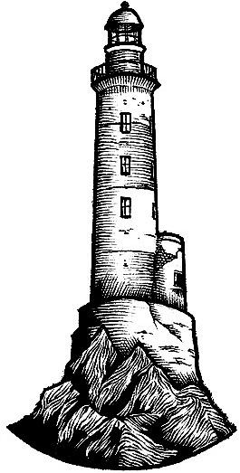

CAP
"Armés de la connaissance de notre passé, nous pouvons avec confiance embarquer, cap vers notre futur." Malcom X
Pourquoi certains d'entre nous ont-ils le sentiment d'assister au spectacle de leur vie sans y participer, tandis que d'autres se lancent et agissent avec aisance ? Pourquoi certains sont-ils incapables de saisir leur existence à bras-le-corps, tandis que d’autres rayonnent de détermination et de liberté ?
Peut-être car certains adultes restent passifs, ceci en se remettant prioritairement à l’avis des autres sur la façon dont il convient de vivre, et finissent par faire ce qu’on leur dit de faire. Or, il ne s’agit pas d’avoir une vie extraordinaire, mais juste de pouvoir ressentir que la vie que l’on mène, si elle paraît banale aux yeux des autres, est bien sa vie à soi et d'y être inscrit. Considérons que l’homme ne peut jamais savoir ce qu’il faut vouloir, car il n’a qu’une vie et il ne peut ni la comparer à des vies antérieures, ni la rectifier dans des vies ultérieures. Ainsi, cette nécessité de vivre du premier coup, sans répétition, le rend possiblement incapable de vivre sereinement. Faire avec, c’est, pour François Roustang, hypnothérapeute, une des clés de la sagesse. Car "telle est la vie, difficile, imparfaite, indomptable. Et il est vain de se plaindre, de vouloir que les choses ou les gens soient autrement", assure-t-il. Vivre ici et maintenant, il n’y a pas d’autre issue !
Dans tout trajet de vie, on ne devient véritablement son capitaine que lorsque l’on accepte de prendre la pleine responsabilité de son existence, lorsque l’on cesse d’attribuer son mal-être aux autres, au passé, aux circonstances extérieures et que l’on devient capable de lutter contre la force d’inertie qui est en nous. L’acceptation de cette responsabilité parfois peut passer par la dépression, le vide de la solitude, le doute, mais surtout la prise de conscience et la mesure de ses besoins présents et futurs qui peuvent générer un sentiment de peur.
Justement, la peur fait partie du voyage et si on attend qu’elle disparaisse alors on ne tentera jamais rien. Elle est aussi un outil piégeant de notre Ego. L’Ego nous tend des pièges, nous fabrique des angoisses car son rôle est de nous laisser dans notre zone de confort. L’Ego aime quand rien ne change dans notre vie. Il se place comme le paravent de notre Moi, au sens de qui je suis, de notre conscience. L'émotion est ainsi le meilleur outil pour ne pas se tromper de route car nous sommes nés avec, mais là encore, pas de mode d’emploi. Ce guide intérieur est double, comprenant ses émotions et son intuition. Nous passons souvent notre temps à fuir nos émotions pourtant elles viennent nous livrer un message et nous donner le moyen de choisir le meilleur chemin ou la meilleure direction pour nous. Si nous les enfouissons au fond de nous sans y prêter attention, dans une parfaite et classique absence d'acuité émotionnelle, nous pouvons être certains de passer à côté de nous et de nos choix profonds. A l'inverse, si nous décidons de suivre notre "boussole interne", alors nous allons évaluer les différentes options et besoins qui s’offrent à nous, choisir ce qui nous convient le mieux et pouvoir ainsi prendre un cap.
Prendre un cap tient également compte de notre rapport à l'autre et c'est, entre autre, dans nos relations aux autres que nous sommes confrontés à nos propres besoins. Ainsi, si nous n’avons jamais su écouter nos besoins ou bien nous avons appris à soigneusement les étouffer, nous ne savons pas les reconnaître lorsqu'il est nécessaire. Comment penser être à l’écoute de l’autre alors que nous ne savons pas être à l’écoute de nous-mêmes ? Comment respecter l’autre puisque nous ne nous respectons pas ? Comment accueillir la singularité de l’autre sans entendre la nôtre ? En sachant identifier nos propres besoins, nous apprenons à reconnaître ceux de l’autre : besoin de reconnaissance de sa souffrance, d’être rassuré, valorisé, de se reposer, etc.
Le courant humaniste utilise la théorie du besoin comme déterminant des comportements. Un besoin correspond à un état de manque que l'individu cherche à réduire pour ramener un équilibre. Certains besoins sont plus importants que d'autres, plus primaire. En effet, manger lorsqu'on a faim est plus prioritaire que de parler à son ami. Ce qui peut laisser sous tendre qu'un comportement déviant peut être la dialectique visible d'un besoin inconscient.
Peut-être car certains adultes restent passifs, ceci en se remettant prioritairement à l’avis des autres sur la façon dont il convient de vivre, et finissent par faire ce qu’on leur dit de faire. Or, il ne s’agit pas d’avoir une vie extraordinaire, mais juste de pouvoir ressentir que la vie que l’on mène, si elle paraît banale aux yeux des autres, est bien sa vie à soi et d'y être inscrit. Considérons que l’homme ne peut jamais savoir ce qu’il faut vouloir, car il n’a qu’une vie et il ne peut ni la comparer à des vies antérieures, ni la rectifier dans des vies ultérieures. Ainsi, cette nécessité de vivre du premier coup, sans répétition, le rend possiblement incapable de vivre sereinement. Faire avec, c’est, pour François Roustang, hypnothérapeute, une des clés de la sagesse. Car "telle est la vie, difficile, imparfaite, indomptable. Et il est vain de se plaindre, de vouloir que les choses ou les gens soient autrement", assure-t-il. Vivre ici et maintenant, il n’y a pas d’autre issue !
Dans tout trajet de vie, on ne devient véritablement son capitaine que lorsque l’on accepte de prendre la pleine responsabilité de son existence, lorsque l’on cesse d’attribuer son mal-être aux autres, au passé, aux circonstances extérieures et que l’on devient capable de lutter contre la force d’inertie qui est en nous. L’acceptation de cette responsabilité parfois peut passer par la dépression, le vide de la solitude, le doute, mais surtout la prise de conscience et la mesure de ses besoins présents et futurs qui peuvent générer un sentiment de peur.
Justement, la peur fait partie du voyage et si on attend qu’elle disparaisse alors on ne tentera jamais rien. Elle est aussi un outil piégeant de notre Ego. L’Ego nous tend des pièges, nous fabrique des angoisses car son rôle est de nous laisser dans notre zone de confort. L’Ego aime quand rien ne change dans notre vie. Il se place comme le paravent de notre Moi, au sens de qui je suis, de notre conscience. L'émotion est ainsi le meilleur outil pour ne pas se tromper de route car nous sommes nés avec, mais là encore, pas de mode d’emploi. Ce guide intérieur est double, comprenant ses émotions et son intuition. Nous passons souvent notre temps à fuir nos émotions pourtant elles viennent nous livrer un message et nous donner le moyen de choisir le meilleur chemin ou la meilleure direction pour nous. Si nous les enfouissons au fond de nous sans y prêter attention, dans une parfaite et classique absence d'acuité émotionnelle, nous pouvons être certains de passer à côté de nous et de nos choix profonds. A l'inverse, si nous décidons de suivre notre "boussole interne", alors nous allons évaluer les différentes options et besoins qui s’offrent à nous, choisir ce qui nous convient le mieux et pouvoir ainsi prendre un cap.
Prendre un cap tient également compte de notre rapport à l'autre et c'est, entre autre, dans nos relations aux autres que nous sommes confrontés à nos propres besoins. Ainsi, si nous n’avons jamais su écouter nos besoins ou bien nous avons appris à soigneusement les étouffer, nous ne savons pas les reconnaître lorsqu'il est nécessaire. Comment penser être à l’écoute de l’autre alors que nous ne savons pas être à l’écoute de nous-mêmes ? Comment respecter l’autre puisque nous ne nous respectons pas ? Comment accueillir la singularité de l’autre sans entendre la nôtre ? En sachant identifier nos propres besoins, nous apprenons à reconnaître ceux de l’autre : besoin de reconnaissance de sa souffrance, d’être rassuré, valorisé, de se reposer, etc.
Le courant humaniste utilise la théorie du besoin comme déterminant des comportements. Un besoin correspond à un état de manque que l'individu cherche à réduire pour ramener un équilibre. Certains besoins sont plus importants que d'autres, plus primaire. En effet, manger lorsqu'on a faim est plus prioritaire que de parler à son ami. Ce qui peut laisser sous tendre qu'un comportement déviant peut être la dialectique visible d'un besoin inconscient.

Alors, la motivation est l'action qui nous pousse à combler un manque, donc un besoin. Il ne s’agit pas d’un caprice ou d’une simple préférence, mais d’une sorte de nécessité qui découle de ce que nous sommes. Un besoin est une nécessité dans la vie et non pas quelque chose d’optionnel. Il s’agit de quelque chose qui nous fait défaut afin de nous sentir entier. Lorsque les besoins sont insatisfaits, ils monopolisent toute l’attention, on a dès lors tendance à se concentrer sur le manque au lieu des moyens à mettre en place pour les combler.
Si nous ignorons nos besoins, c’est toujours au détriment de notre vitalité. Pour les besoins physiques, le lien avec la survie est évident. Plus précisément, c’est le lien avec la survie physique qui est indiscutable. Dans le cas de nos autres besoins, c’est de la vitalité psychique qu’il s’agit. Tout besoin trop peu comblé nous amène à devenir moins vivant dans son secteur particulier de notre vie.
Les besoin d’appartenance (amour, amitié, relations affectueuses et faire partie d’un groupe) précèdent les besoins liés à l’estime (respect, attention, appréciation des autres, estime de soi, compétence, liberté, etc.). Dans les deux cas, l’enjeu n’est plus la survie physique, mais la satisfaction, la santé et la vitalité psychique. Le besoin d’inclusion est celui qui nous pousse à nous associer à un groupe, à chercher à faire partie d’un ensemble de personnes, à être membre reconnu d’une collectivité. Le besoin de contrôle est celui qui nous amène à tenter d’influencer les personnes avec lesquelles nous sommes en contact, à vouloir faire une différence dans notre environnement, à vouloir avoir notre mot à dire dans ce qui se passe. Le besoin d’affection nous pousse à établir des relations privilégiées, caractérisées par l’intimité et la chaleur. C’est le besoin d’aimer et d’être aimé tel qu’il s’applique à nos conjoints, nos enfants et nos amis intimes.
Le droit à une identité distincte est lié au besoin d’affirmation et d’autonomie. Il concerne la capacité de s’affirmer comme un être distinct sans perdre l’amour des personnes auxquelles on est lié. C’est le droit d’être soi-même et de s’estimer comme tel qui constitue l’enjeu essentiel de cette conquête.
Le droit à une identité sexuelle est lié au besoin d’aimer et d’être aimé en tant qu’être adulte sexué. L’enjeu est l’estime de soi en tant que partenaire sexuel et amoureux. Le droit d’avoir une vie sexuelle et amoureuse pleinement satisfaisante est le résultat de cette conquête réussie.
Si on posait une analogie ici, les besoins représentent les points cardinaux de notre traversée de vie. C'est en fonction d'eux, que nous optons pour prendre telle ou telle direction. Et en l'absence de ses coordonnées directionnelles, on navigue sans cap définit. Rappelez-vous, Christophe COLOMB !
Si nous ignorons nos besoins, c’est toujours au détriment de notre vitalité. Pour les besoins physiques, le lien avec la survie est évident. Plus précisément, c’est le lien avec la survie physique qui est indiscutable. Dans le cas de nos autres besoins, c’est de la vitalité psychique qu’il s’agit. Tout besoin trop peu comblé nous amène à devenir moins vivant dans son secteur particulier de notre vie.
Les besoin d’appartenance (amour, amitié, relations affectueuses et faire partie d’un groupe) précèdent les besoins liés à l’estime (respect, attention, appréciation des autres, estime de soi, compétence, liberté, etc.). Dans les deux cas, l’enjeu n’est plus la survie physique, mais la satisfaction, la santé et la vitalité psychique. Le besoin d’inclusion est celui qui nous pousse à nous associer à un groupe, à chercher à faire partie d’un ensemble de personnes, à être membre reconnu d’une collectivité. Le besoin de contrôle est celui qui nous amène à tenter d’influencer les personnes avec lesquelles nous sommes en contact, à vouloir faire une différence dans notre environnement, à vouloir avoir notre mot à dire dans ce qui se passe. Le besoin d’affection nous pousse à établir des relations privilégiées, caractérisées par l’intimité et la chaleur. C’est le besoin d’aimer et d’être aimé tel qu’il s’applique à nos conjoints, nos enfants et nos amis intimes.
Le droit à une identité distincte est lié au besoin d’affirmation et d’autonomie. Il concerne la capacité de s’affirmer comme un être distinct sans perdre l’amour des personnes auxquelles on est lié. C’est le droit d’être soi-même et de s’estimer comme tel qui constitue l’enjeu essentiel de cette conquête.
Le droit à une identité sexuelle est lié au besoin d’aimer et d’être aimé en tant qu’être adulte sexué. L’enjeu est l’estime de soi en tant que partenaire sexuel et amoureux. Le droit d’avoir une vie sexuelle et amoureuse pleinement satisfaisante est le résultat de cette conquête réussie.
Si on posait une analogie ici, les besoins représentent les points cardinaux de notre traversée de vie. C'est en fonction d'eux, que nous optons pour prendre telle ou telle direction. Et en l'absence de ses coordonnées directionnelles, on navigue sans cap définit. Rappelez-vous, Christophe COLOMB !
EN RELATION


TRANSE MUER

OSER
BESOINS
VISION
(relationnels)
ATARAXIE
(bonheur)
IDEAL